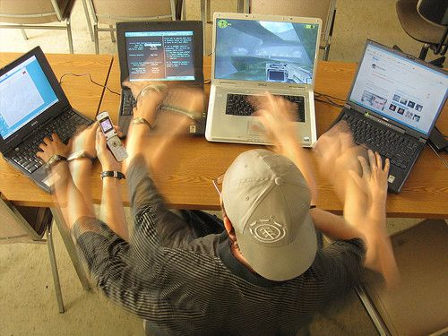

สวัสดีค่ะ ดิฉันนางสาวณัฐธยาน์ ยุทธสารเสนีย์ รหัสนักศึกษา 6909650217 ตอนนี้กำลังศึกษาอยู่ที่คณะวิทยาศาสตร์และเทคโนโลยี สาขา วิทยาการคอมพิวเตอร์ ที่มหาวิทยาลัยธรรมสตร์ ชั้นปีที่ 1
และนี่เป็นครั้งแรกที่ฉันได้เขียนเว็บเองฉันรู้สึกตื่นเต้นมากเพราะเป็นอะไรใหม่ๆที่ได้เรียนรู้ และกลัวทำส่งไม่ทันกำหนดด้วยเนื่องจากอาการป่วย 😭😭 อย่างไรก็ตาม ยินดีตอนรับเข้าสู่เว็บไซต์ของฉันค่ะ!!

เว็บนี้เป็นเว็บบันทึกความก้าวหน้าหรือจะเรียกว่าไดอารี่การสร้างเว็บแบบย่อมๆเลยก็ได้ ส่วนประกอบสำคัญก็จะเป็นข้อมูลเกี่ยวกับตัวฉันและข้อมูลการพัฒนาในการสร้างเว็บไซต์
จากคำถามที่ว่า: พิจารณาว่า ในขณะที่เปิดเว็บไซต์จากเครื่องของตนเอง มี client หรือ server เกิดขึ้นแล้วหรือไม่ เพราะเหตุใด
คำตอบ: ยังไม่มีclient หรือ server เกิดขึ้น เพราะว่าที่สามารถเข้าถึงเว็บนี้ได้มาจากไฟล์ที่เปิดขึ้นบนอุปกรณ์เพียงเท่านั้น ไม่ได้มาจากการเปิดลิ้งค์urlจึงยังไม่มีการรับส่งข้อมูลกันเกิดขึ้น
ฉันเริ่มจากหาข้อมูลและดูภาพรวมของงานและเริ่มวางแผน ในตอนแรกฉันได้เขียนเนื้อหาของเว็บลงwordเพื่อจะได้รู้ภาพรวมของเนื้อหา จากนั้นหาสไตล์การตกแต่งว่าจะทำเว็บออกมาหน้าตาประมาณไหน และเริ่มลงมือทำ ซึ่งบางสิ่งที่ฉันไม่เข้าใจหรือสงสัยฉันก็จะกลับไปอ่านในสไลด์และถ้าไม่เข้าใจฉันก็จะหาววิธีการทำใน youtube และค้นคว้าหาข้อมูลเพิ่มเติมใน w3schools ที่อาจารย์ได้แนะนำมา และทางเลือกสุดท้ายถ้าต้องการค้นหาแบบรวดเร็วหรือจนปัญญาจริงๆก็จะถาม chat AI ซึ่งมันก็สามารถช่วยได้จริงรวดเร็วและตรงจุดทำให้ฉันสามารถทำงานต่อได้ (แต่ไม่ได้ใช้เจนโค้ดนะค๊า😭😭)
A. ปัญหาที่พบส่วนใหญ่เป็นปัญหาที่ไม่รู้ว่าจะเขียนคำสั่งโค้ดว่าอะไรเช่นจะกำหนดความยาวของเส้นคัน ฉันจึงถามGemini หรือจะเป็นการเชื่อมcssเข้ากับhtml ซึ่งฉันติดอย่ตรงนี้ประมาณ20นาที ก่อนจะนึกขึ้นได้ว่าลืมเขียนให้มันเชื่อมกัน
A.เข้าใจในเรื่องของการเชื่อม cssเข้ากับhtml การแทรกไฟล์รูปภาพและวิดีโอ การจัดระเบียบหน้า หรือแม้กระทั่งการแก้ปัญหา code error ที่พบได้บ่อย
A. อยากเพิ่มความละเอียดของเนื้องาน และความสวยงาม เนื่องจากตอนนี้ฉันสามารถเขียนโค้ดได้แค่เบื้องต้นเท่านั้น ในส่วนนี้ฉันคิดว่ายังอาจจะเป็นข้อจำกัดสำหรับฉันอยู่
สุดท้ายนี้อยากจะบอกว่าผลงานชิ้นนี้หนูตั้งใจทำมากและสนุกมากที่ได้ลองทำ ถึงแม้หน้าเว็บเพจจะกากๆหน่อยแต่ก็ดีใจและภูมิใจที่ได้ทำมันขึ้นมา ขอบคุณที่เข้ามารับชมนะคะ
ps.2 ฝากเพลงใหม่ของ Red velvet ด้วยนะคะ >,<
demo!!